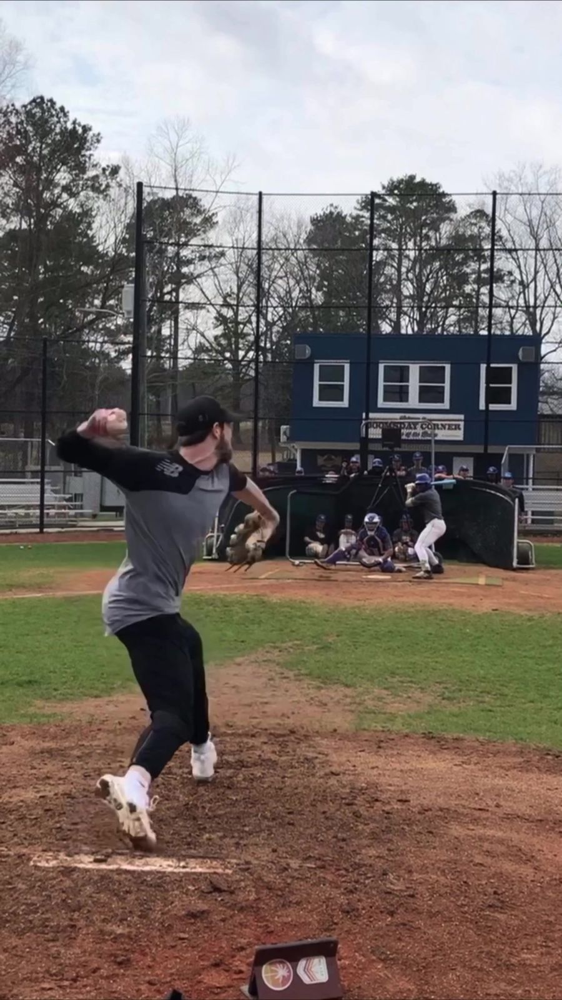

My velocity after Tommy John, month by month
I had Tommy John on March 6, 2023. Hamstring graft, UCL torn off the bone, in the last year of my contract with the Diamondbacks.
When you're coming back, everybody gives you a timeline. Nobody gives you the numbers. So here is what my fastball actually did. This is my story, not a plan to follow.
The short version
- Month 7Around 80 on flat ground
- Month 981-86 off the mound, average 84. First 90 later that month
- Month 10Sat 91, hit 92.4
- Month 1190-92, nothing under 90. Then a pen at 90.5 max
- Month 11.75First live BP. Topped at 93.2
- Month 12Average 92 up to 93.4, then 94.6 on Trackman
- Month 12.592-94.8 in a bullpen
- Month 13Signed with Seattle. 90-92 in a pen that same week
Months 3 to 8: staying patient
At 12 weeks out I was telling people the elbow felt solid. That part of rehab is mostly doing what you're told.
By October, seven months out, the hardest I'd ever thrown without a mound was 89, and I was 9 away from that "with half a ligament." In November my plan was 82-86 for two weeks, then a deload, then 87-90 for two weeks, then another deload. After one of those days I wrote down 78 on flat ground and no pain, and that was a good day.
Month 9: the rut
This is the stretch nobody warns you about. On December 1 I hit 84 and called it "slowly making my way out of the rut." On December 5 I logged 78-79 on flat ground and 81-86 off the mound, averaging 84. My protocol had me going to 87-90 on the mound, and I didn't know if I was ready for that.
I was a guy who'd thrown 97. Trying that hard for 84 messes with your head. Every TJ guy I've talked to has some version of that month.
Months 10 and 11: it came back fast, and I got dumb
On January 3, ten months out, I sat 91 and hit 92.4. I'd gone from 84 to 92 in about a month. Then I did what you're not supposed to do. Two weeks later I admitted it:
I haven't been smart the last two weeks. The 93 got me excited.Me, January 16, 2024
I'd been throwing with intent way too often. It wasn't until January 31 that I threw and didn't feel anything in my elbow for the first time since that 92.4. For me, the lesson was that the number coming back didn't mean I should throw hard more often. What you're cleared to do is your surgeon and PT's call.
It wasn't a straight line either. February 10 I was 90-92 and didn't throw a heater under 90. Two weeks later I had a pen that maxed at 90.5. My velo moved around a lot.

Month 12: 95 for the first time in 8 years
February 28 was my first live BP, as a free agent with no team. I topped out at 93.2. I was sending that to anybody in baseball who'd read it. One club told me that if I could get to 94 they'd talk.
On March 7 I averaged 92, up to 93.4. That was the highest average fastball of my career. On March 12 Trackman had me at 94.6, and on March 24 I was 92-94.8. Round up like a pitcher and that's 95, for the first time since the draft.
By April 12 I had signed with Seattle. That same week I was back to 90-92 in a bullpen, and I was 90-93 in live BP after that. The number still moves around after you've signed.
What I'd take from it
Month 9 wasn't the verdict for me. I was averaging 84 at nine months and 92 at twelve.
The bump is a trap. When the velo jumps, that's when you want to throw hard every day, and that's when I got sore.
One pen is one pen. I had 90.5 two weeks after 92 and four days before 93.2.
This is one arm. Yours will do something different, and I can't promise you a number or a date. But if you're looking up at an 84 right now and wondering if that's it, I've been standing right there. If it's pain and not just the number, take that to your surgeon or PT.
I program pitchers through this part of the road, alongside their surgeon and PT. Here's how it works.
Text Matt